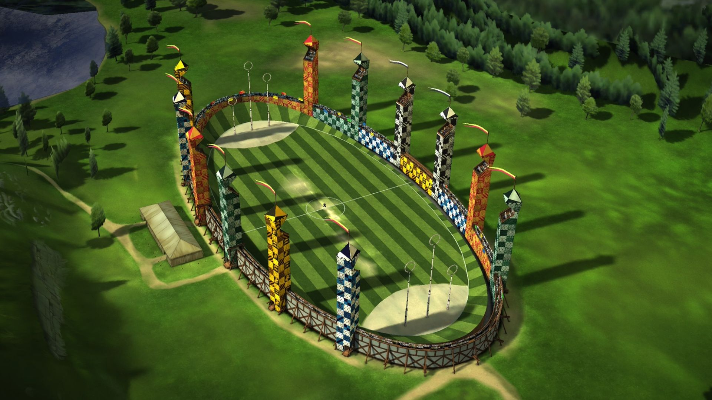

Games and Events

Quiddich
is Played by two teams consisting of seven players each, it is designed to mirror the book version of the game as much as possible. Each player is mounted on a broomstick and attempts to win the game by having more points than their opponents by the time the Golden Snitch is caught (which in this version of the game, is a tennis ball in a long yellow sock).The object of the game of Quidditch is to score more points than your opponents. Players do this by scoring goals which is done by placing a slightly deflated volleyball called the Quaffle into the opposition's baskets giving them 10 points, and by capturing the Golden Snitch which is worth 30 points.
The Triwizard Tournament
was first established some seven hundred years ago as a friendly competition between the three largest European schools of wizardry: Hogwarts, Beauxbatons, and Durmstrang. A champion was selected to represent each school, and the three champions competed in three magical tasks. The schools took it in turns to host the tournament once every five years, and it was generally agreed to be a most excellent way of establishing ties between young witches and wizards of different nationalities — until, that is, the death toll mounted so high that the tournament was discontinued.